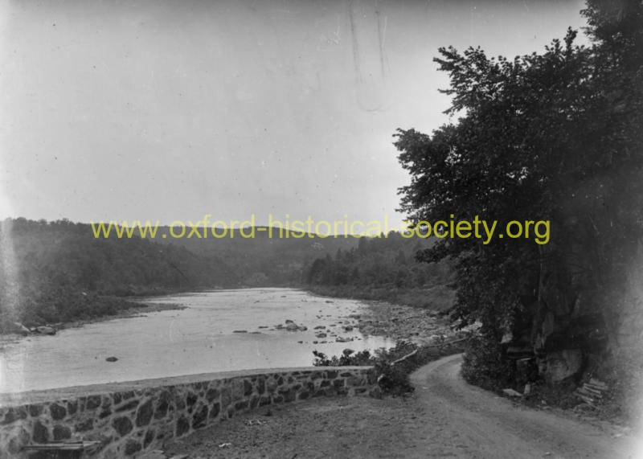

 072_Looking-north-from-zoar-bridge-road-going-to-Bennetts-Bridge_2012-PF.jpg
View of Housatonic before dam construction. Looking north from Zoar Bridge at the road which went to Bennett's Bridge in Southbury.
Previous
Thumbnails
Next